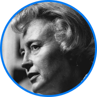

Los preferidos de nuestros lectores
Que nuestros lectores y lectoras aman
-
Padre rico, padre pobre
Es un libro de finanzas personales que narra la historia del autor, quien creció con dos padres: su padre biológico, que era pobre, y el padre de su mejor amigo, que era rico. A traves de estas experiencias, Kiyosaki enseña lecciones sobre la independencia financiera y la importancia de cambiar nuestra mentalidad hacia el dinero.
-
El Kybalion
El Kybalión es una obra que explora los siete principios herméticos que rigen el universo y la mente humana. Estos principios incluyen el mentalismo, la correspondencia, la vibración, la polaridad, el ritmo, la causa y efecto, y la generación. La obra se basa en las enseñanzas atribuidas a Hermes Trismegisto.
-
Muchas vidas, muchos maestros.
La historia real de un psiquiatra, su joven paciente y la terapia de regresión que cambió sus vidas para siempre. Una de sus pacientes, Catherine, recordó bajo hipnosis sus vidas pasadas y consiguió encontrar en éstas el origen de muchos de los traumas que sufría. Catherine se curó, pero ocurrió algo insólito: logró ponerse en contacto con los Maestros, espíritus superiores que habitan los estados entre dos vidas.
-
Hábitos Atómicos
Nos brinda fantásticas ideas basadas en investigaciones científicas, que le permiten revelarnos cómo podemos transformar pequeños hábitos cotidianos para cambiar nuestra vida y mejorarla. Esta guía pone al descubierto las fuerzas ocultas que moldean nuestro comportamiento.
Próximos eventos:
En honor de Joan Feynman: mujeres en la astrofísica
Lunes 12 de enero
Sala de conferencias y virtual de la biblioteca Triple Peaks
En este evento, en el que celebramos el nombre de nuestra biblioteca, nuestra invitada nos llevará a través de un viaje para conocer a algunas de las mujeres investigadoras más importantes en el mundo de la ciencia espacial. Es fácil caer en la falsa idea de que este campo está principalmente dominado por hombres, pero nuestra conferencia busca cambiar esa noción y probar que no ha sido así desde, al menos, el siglo XVII.
Más eventos →
Joan Feynman

Margaret Burbidge

Annie Jump Cannon

Maria Mitchell
Jill Tarter